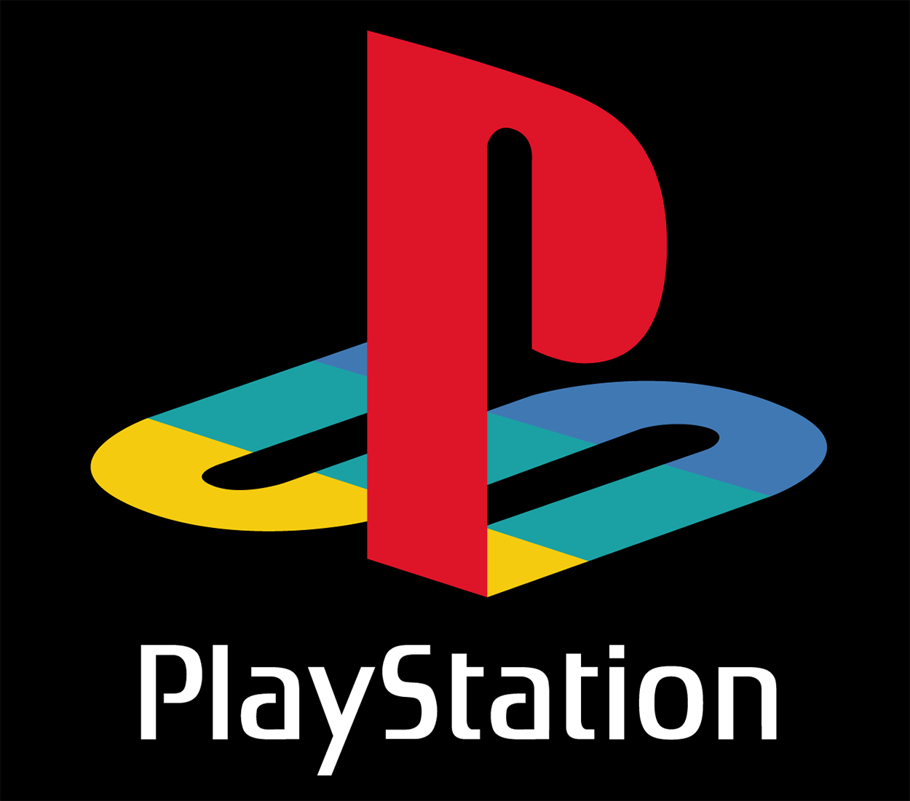

|
 | |
|
|---|
|
Minecraft es un videojuego de construcción de tipo «mundo abierto» o sandbox creado originalmente por el sueco Markus Persson (conocido comúnmente como «Notch»), y posteriormente desarrollado por Mojang Studios (actualmente parte de Microsoft). Fue lanzado el 17 de mayo de 2009, y después de numerosos cambios, su primera versión estable «1.0» fue publicada el 18 de noviembre de 2011. Un mes antes del lanzamiento de su versión completa se estrenó una versión para dispositivos móviles llamada Minecraft: Pocket Edition en Android, y el 17 de noviembre del mismo año fue lanzada la misma versión para iOS. El 9 de mayo de 2012 fue lanzada la versión del juego para Xbox 360 y PS3. Todas las versiones de Minecraft reciben actualizaciones constantes desde su lanzamiento. En octubre de 2014, Minecraft lanzó su edición para PlayStation Vita,desarrollada por Mojang y 4J Studios. Esta versión presenta las mismas actualizaciones y similares características que las otras versiones de consola; además, cuenta con el sistema de venta cruzada, es decir que al comprar la versión de PlayStation 3 se obtiene también la de PlayStation Vita. A septiembre de 2014 se habían vendido más de 54 millones de copias. |
 |
|
El 15 de septiembre de 2014, fue adquirido por la empresa Microsoft por un valor de 2500 millones de dólares estadounidenses. Este suceso provocó el alejamiento de Markus Persson de la compañía.En noviembre de 2016, Microsoft anunció el lanzamiento de la versión completa de Minecraft: Education Edition. El modelo de abierto-cerrado del juego le permite a los jugadores crear estructuras, creaciones, y arte en varios servidores multijugador o sus mapas de un jugador. Otras características incluyen circuitos de redstone para mecanismos lógicos y acciones remotas, vagonetas y caminos, y un misterioso sub-mundo llamado el Nether. Una meta diseñada pero completamente opcional del juego es viajar a una dimensión llamada el End, y derrotar al Enderdragón. |